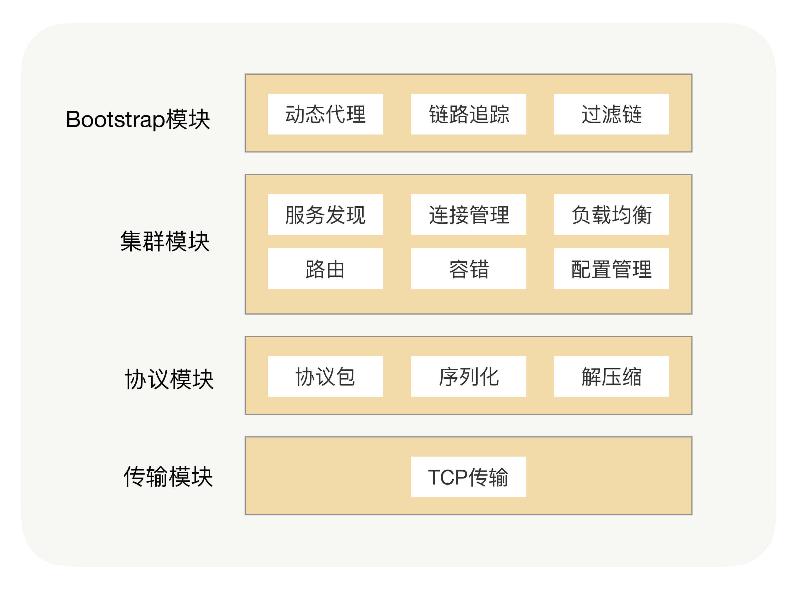
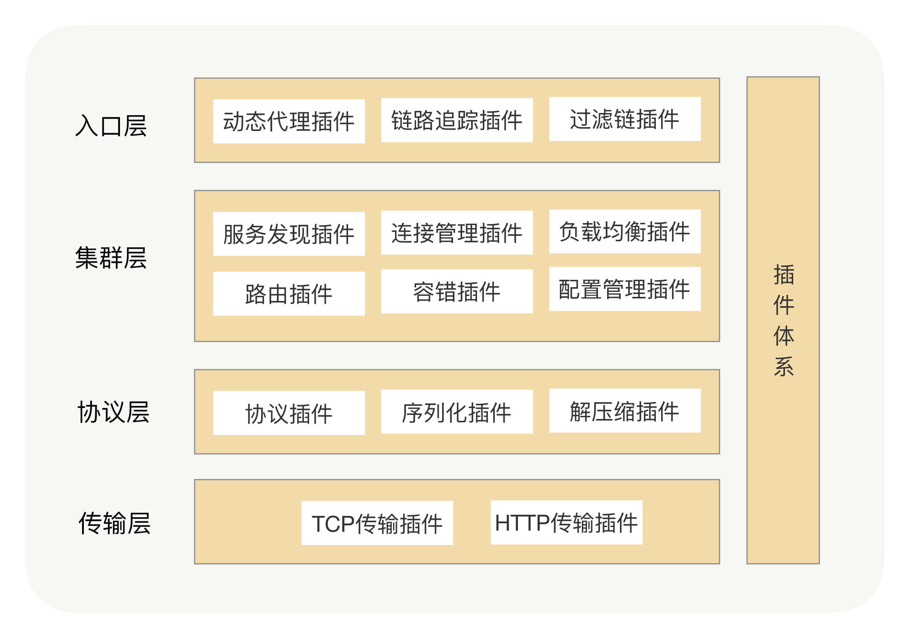

- 00 开篇词 别老想着怎么用好RPC框架，你得多花时间琢磨原理.md
- 01 核心原理：能否画张图解释下RPC的通信流程？.md
- 02 协议：怎么设计可扩展且向后兼容的协议？.md
- 03 序列化：对象怎么在网络中传输？.md
- 04 网络通信：RPC框架在网络通信上更倾向于哪种网络IO模型？.md
- 05 动态代理：面向接口编程，屏蔽RPC处理流程.md
- 06 RPC实战：剖析gRPC源码，动手实现一个完整的RPC.md
- 07 架构设计：设计一个灵活的RPC框架.md
- 08 服务发现：到底是要CP还是AP？.md
- 09 健康检测：这个节点都挂了，为啥还要疯狂发请求？.md
- 10 路由策略：怎么让请求按照设定的规则发到不同的节点上？.md
- 11 负载均衡：节点负载差距这么大，为什么收到的流量还一样？.md
- 12 异常重试：在约定时间内安全可靠地重试.md
- 13 优雅关闭：如何避免服务停机带来的业务损失？.md
- 14 优雅启动：如何避免流量打到没有启动完成的节点？.md
- 15 熔断限流：业务如何实现自我保护_.md
- 16 业务分组：如何隔离流量？.md
- 17 异步RPC：压榨单机吞吐量.md
- 18 安全体系：如何建立可靠的安全体系？.md
- 19 分布式环境下如何快速定位问题？.md
- 20 详解时钟轮在RPC中的应用.md
- 21 流量回放：保障业务技术升级的神器.md
- 22 动态分组：超高效实现秒级扩缩容.md
- 23 如何在没有接口的情况下进行RPC调用？.md
- 24 如何在线上环境里兼容多种RPC协议？.md
- 加餐 RPC框架代码实例详解.md
- 加餐 谈谈我所经历过的RPC.md
- 答疑课堂 基础篇与进阶篇思考题答案合集.md
- 结束语 学会从优秀项目的源代码中挖掘知识.md
07 架构设计：设计一个灵活的RPC框架
你好，我是何小锋。到今天为止，基础篇的知识我们就全部学习完了，接下来我们进入进阶篇。
在基础篇里面，我们讲了RPC的通信原理以及RPC里各个功能组件的作用，不妨用一段话再次回顾下：“其实RPC就是把拦截到的方法参数，转成可以在网络中传输的二进制，并保证在服务提供方能正确地还原出语义，最终实现像调用本地一样地调用远程的目的。”你记住了吗？
那学到这儿，距离实现一个灵活的RPC框架其实还是有距离的。知道了各个功能组件只是迈出了第一步，接下来你必须要清楚各个组件之间是怎么完成数据交互的，这也是今天这讲的重点，我们一起搞清楚RPC的架构设计。
RPC架构
说起架构设计，我相信你一定不陌生。我理解的架构设计呢，就是从顶层角度出发，厘清各模块组件之间数据交互的流程，让我们对系统有一个整体的宏观认识。我们先看看RPC里面都有哪些功能模块。
我们讲过，RPC本质上就是一个远程调用，那肯定就需要通过网络来传输数据。虽然传输协议可以有多种选择，但考虑到可靠性的话，我们一般默认采用TCP协议。为了屏蔽网络传输的复杂性，我们需要封装一个单独的数据传输模块用来收发二进制数据，这个单独模块我们可以叫做传输模块。
用户请求的时候是基于方法调用，方法出入参数都是对象数据，对象是肯定没法直接在网络中传输的，我们需要提前把它转成可传输的二进制，这就是我们说的序列化过程。但只是把方法调用参数的二进制数据传输到服务提供方是不够的，我们需要在方法调用参数的二进制数据后面增加“断句”符号来分隔出不同的请求，在两个“断句”符号中间放的内容就是我们请求的二进制数据，这个过程我们叫做协议封装。
虽然这是两个不同的过程，但其目的都是一样的，都是为了保证数据在网络中可以正确传输。这里我说的正确，可不仅指数据能够传输，还需要保证传输后能正确还原出传输前的语义。所以我们可以把这两个处理过程放在架构中的同一个模块，统称为协议模块。
除此之外，我们还可以在协议模块中加入压缩功能，这是因为压缩过程也是对传输的二进制数据进行操作。在实际的网络传输过程中，我们的请求数据包在数据链路层可能会因为太大而被拆分成多个数据包进行传输，为了减少被拆分的次数，从而导致整个传输过程时间太长的问题，我们可以在RPC调用的时候这样操作：在方法调用参数或者返回值的二进制数据大于某个阈值的情况下，我们可以通过压缩框架进行无损压缩，然后在另外一端也用同样的压缩算法进行解压，保证数据可还原。
传输和协议这两个模块是RPC里面最基础的功能，它们使对象可以正确地传输到服务提供方。但距离RPC的目标——实现像调用本地一样地调用远程，还缺少点东西。因为这两个模块所提供的都是一些基础能力，要让这两个模块同时工作的话，我们需要手写一些黏合的代码，但这些代码对我们使用RPC的研发人员来说是没有意义的，而且属于一个重复的工作，会导致使用过程的体验非常不友好。
这就需要我们在RPC里面把这些细节对研发人员进行屏蔽，让他们感觉不到本地调用和远程调用的区别。假设有用到Spring的话，我们希望RPC能让我们把一个RPC接口定义成一个Spring Bean，并且这个Bean也会统一被Spring Bean Factory管理，可以在项目中通过Spring依赖注入到方式引用。这是RPC调用的入口，我们一般叫做Bootstrap模块。
学到这儿，一个点对点（Point to Point）版本的RPC框架就完成了。我一般称这种模式的RPC框架为单机版本，因为它没有集群能力。所谓集群能力，就是针对同一个接口有着多个服务提供者，但这多个服务提供者对于我们的调用方来说是透明的，所以在RPC里面我们还需要给调用方找到所有的服务提供方，并需要在RPC里面维护好接口跟服务提供者地址的关系，这样调用方在发起请求的时候才能快速地找到对应的接收地址，这就是我们常说的“服务发现”。
但服务发现只是解决了接口和服务提供方地址映射关系的查找问题，这更多是一种“静态数据”。说它是静态数据是因为，对于我们的RPC来说，我们每次发送请求的时候都是需要用TCP连接的，相对服务提供方IP地址，TCP连接状态是瞬息万变的，所以我们的RPC框架里面要有连接管理器去维护TCP连接的状态。
有了集群之后，提供方可能就需要管理好这些服务了，那我们的RPC就需要内置一些服务治理的功能，比如服务提供方权重的设置、调用授权等一些常规治理手段。而服务调用方需要额外做哪些事情呢？每次调用前，我们都需要根据服务提供方设置的规则，从集群中选择可用的连接用于发送请求。
那到这儿，一个比较完善的RPC框架基本就完成了，功能也差不多就是这些了。按照分层设计的原则，我将这些功能模块分为了四层，具体内容见图示：

可扩展的架构
那RPC架构设计出来就完事了吗？当然不，技术迭代谁都躲不过。
不知道你有没有这样的经历，你设计的一个系统它看上去很完善，也能很好地运行，然后你成功地把它交付给了业务方。有一天业务方有了新的需求，要加入很多新的功能，这时候你就会发现当前架构面临的可就是大挑战了，要修改很多地方才能实现。
举个例子，假如你设计了一个商品发布系统，早些年我们只能在网上购买电脑、衣服等实物商品，但现在发展成可以在网上购买电话充值卡、游戏点卡等虚拟商品，实物商品的发布流程是需要选择购买区域的，但虚拟商品并没有这一限制。如果你想要在一套发布系统里面同时完成实物和虚拟商品发布的话，你就只能在代码里面加入很多的if else判断逻辑，这样是能行，可整个代码就臃肿、杂乱了，后期也极难维护。
其实，我们设计RPC框架也是一样的，我们不可能在开始时就面面俱到。那有没有更好的方式来解决这些问题呢？这就是我们接下来要讲的插件化架构。
在RPC框架里面，我们是怎么支持插件化架构的呢？我们可以将每个功能点抽象成一个接口，将这个接口作为插件的契约，然后把这个功能的接口与功能的实现分离，并提供接口的默认实现。在Java里面，JDK有自带的SPI（Service Provider Interface）服务发现机制，它可以动态地为某个接口寻找服务实现。使用SPI机制需要在Classpath下的META-INF/services目录里创建一个以服务接口命名的文件，这个文件里的内容就是这个接口的具体实现类。
但在实际项目中，我们其实很少使用到JDK自带的SPI机制，首先它不能按需加载，ServiceLoader加载某个接口实现类的时候，会遍历全部获取，也就是接口的实现类得全部载入并实例化一遍，会造成不必要的浪费。另外就是扩展如果依赖其它的扩展，那就做不到自动注入和装配，这就很难和其他框架集成，比如扩展里面依赖了一个Spring Bean，原生的Java SPI就不支持。
加上了插件功能之后，我们的RPC框架就包含了两大核心体系——核心功能体系与插件体系，如下图所示：

这时，整个架构就变成了一个微内核架构，我们将每个功能点抽象成一个接口，将这个接口作为插件的契约，然后把这个功能的接口与功能的实现分离并提供接口的默认实现。这样的架构相比之前的架构，有很多优势。首先它的可扩展性很好，实现了开闭原则，用户可以非常方便地通过插件扩展实现自己的功能，而且不需要修改核心功能的本身；其次就是保持了核心包的精简，依赖外部包少，这样可以有效减少开发人员引入RPC导致的包版本冲突问题。
总结
我们都知道软件开发的过程很复杂，不仅是因为业务需求经常变化，更难的是在开发过程中要保证团队成员的目标统一。我们需要用一种可沟通的话语、可“触摸”的愿景达成目标，我认为这就是软件架构设计的意义。
但仅从功能角度设计出的软件架构并不够健壮，系统不仅要能正确地运行，还要以最低的成本进行可持续的维护，因此我们十分有必要关注系统的可扩展性。只有这样，才能满足业务变化的需求，让系统的生命力不断延伸。
课后思考
你能分享一下，在日常工作中，你都有哪些地方是用到了插件思想来解决扩展性问题的吗？
欢迎留言和我分享你的思考，也欢迎你把文章分享给你的朋友，邀请他加入学习。我们下节课再见！
© 2019 - 2023 Liangliang Lee. Powered by gin and hexo-theme-book.